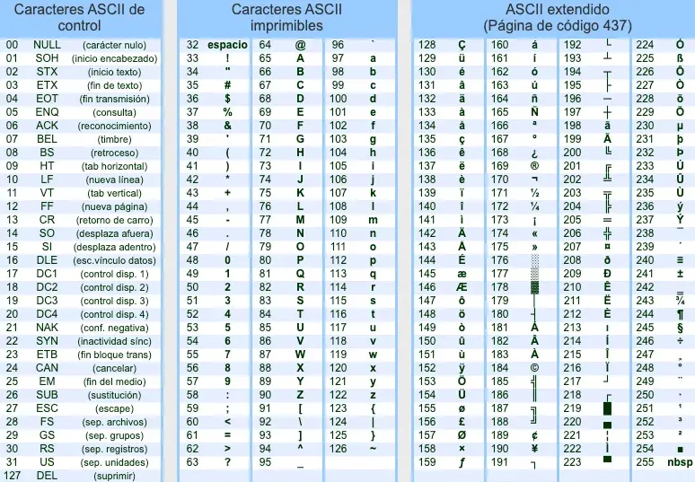

Guía 823: Variables y operaciones¶
|
|

Exploración Estructuración Actividad práctica Transferencia
Temática: Variables y operaciones.
Objetivo de aprendizaje: Comprender el concepto de variables como contenedores de memoria, identificando sus diferentes tipos (numéricos, cadena y booleanos) y aplicando sus fundamentos matemáticos mediante operaciones básicas, codificación y decodificación, para resolver problemas prácticos dentro del contexto de la lógica computacional.
DESEMPEÑO: Comprende y aplica el concepto de variables como contenedores de memoria, identificando correctamente sus tipos (numéricos, cadena y booleanos). Demuestra habilidad en la resolución de operaciones matemáticas básicas, así como en los procesos de codificación y decodificación mediante la tabla ASCII, integrando estos conocimientos para resolver problemas lógicos dentro del contexto computacional.
Componente: Naturaleza y evolución de la T&I.
Competencia: Relaciono saberes, conocimientos tecnológicos e informáticos con los conocimientos de otras disciplinas.
Evidencia de aprendizaje: Comprendo los principios y conocimientos tecnológicos e informáticos que hacen posible el funcionamiento de productos tecnológicos actuales.
Actividades desarrolladas en su totalidad.
Participación en clase.
Explicación clara de conceptos.
Argumentación de ideas.
Cumplimiento de las reglas del aula.
Plan de refuerzo 03.pdf Descargar
Mensaje del autor¶
“En esta guía, el estudiante fortalece sus conocimientos sobre variables y operaciones, habilidades fundamentales para su formación académica y profesional. El objetivo de aprendizaje y la evidencia planteada están diseñados para guiarlo de manera clara y estructurada, permitiéndole aplicar conceptos teóricos en situaciones prácticas que enriquecerán su comprensión y capacidad analítica”.
—Camilo Fonseca
Variables¶
[1] “Una variable es un campo de memoria al que se le puede cambiar su contenido cuantas veces sea necesario”.
Un campo de memoria es un espacio de la memoria RAM en donde se puede guardar un dato.
Las variables se pueden representar como contenedores identificables que pueden almacenar un contenido medible. De esta manera una variable se puede representar de forma gráfica y de forma matemática.
Por ejemplo, una representación gráfica de una variable puede ser una caja etiquetada con la palabra spam, la cual almacena 42 pliegos de papel.

Caja representación gráfica de una variable¶ |
Para la representación matemática, una variable debe cumplir con las siguientes características:
La variable debe tener un nombre que la identifique.
La variable debe tener un signo igual (=) el cual representa una asignación de valor.
La variable debe tener un contenido o valor.
De esta manera la representación matemática de la variable de la caja se escribe así:
\[ spam = 42 \]
Las variables pueden ser de diferente tipo según sea su contenido. A continuación se muestran los diferentes tipos de variables.
Variables de tipo numérico (entero y decimal)¶
Las variables que almacenan números enteros o decimales, son variables de tipo numérico.
Una variable de tipo entero es una variable cuyo contenido es un número entero que no tiene punto decimal. Por tanto sus operaciones jamás van a generar decimales.
Por ejemplo:
\[\begin{split}a &= 12, b = 100 \\ c &= a + b \\ c &= 112\end{split}\]
Una variable de tipo decimal es una variable cuyo contenido es un número que tiene un punto decimal. Por tanto sus operaciones generan decimales.
Por ejemplo:
\[\begin{split}a &= 0.25, b = 0.50 \\ c &= a + b \\ c &= 0.75\end{split}\]
Variables de tipo cadena (carácter)¶
Una variable de tipo carácter es cualquier carácter presente en la TABLA ASCII (American Standard Code for Interchange Information).
 TABLA ASCII¶ |
{kind=link}
La tabla ASCII es un código estándar el cual se usa para intercambiar información en sistemas informáticos. La tabla ASCII contiene equivalencias internas de cada carácter (a, z, 1, @, O) en un número entero que va desde 00 a 255.
Por ejemplo: Cuando usted presiona en el teclado la letra A, internamente en la computadora se genera el número 65. Esto es porque en la tabla ASCII el equivalente numérico del carácter A mayúscula es el número 65. El equivalente a minúscula es el número 97. Así mismo los demás caracteres.
Carácter |
Número ASCII |
|---|---|
A |
65 |
a |
97 |
Las variables de tipo cadena, son variables que se forman de la unión o combinación de varios caracteres.
Por ejemplo: Para los siguientes caracteres: s, a, l, a, 1, 1, 5 se forma una variable de tipo cadena con valor: “sala115”. Igualmente también tendrá su equivalente numérico ASCII. Por ejemplo:
Carácter |
Número ASCII |
|---|---|
s |
115 |
a |
97 |
l |
108 |
a |
97 |
1 |
49 |
1 |
49 |
5 |
53 |
Variables de tipo booleano (True) (False)¶
Una variable de tipo booleano a diferencia de los demás tipos de variables, solo puede tener dos posibles valores: True o False.
Las variables de tipo booleano son usadas para establecer estados. Por ejemplo:
SOLTERO =
TrueMAYOR_DE_EDAD = False
RECIPIENTE_VACIO =
TrueDIA_LLOVIENDO = False
BOMBILLO_PRENDIDO =
TrueAPROBACIÓN_EXAMEN =
True
Operaciones con variables¶
[2] Las operaciones con variables numéricas permiten entender el ciclo de vida de las variables, en especial las variables dinámicas (cuyo valor cambia constantemente).
Para operar se empieza declarando unas variables con unos valores iniciales los cuales van cambiando a medida que se realicen operaciones previamente definidas. Al ser variables numéricas estas pueden ser de tipo entero o decimal.
Después de resolver todas la operaciones, al final se obtienen los valores finales de las variables.
A continuación se muestra un ejemplo de operaciones con variables.
EJEMPLO
Para las siguientes variables iniciales:
\(a=10\), \(b=15\) y \(c=20\)
Desarrollar las siguientes operaciones para hallar: \(af=?\), \(bf=?\) y \(cf=?\)
\[\begin{split}a &= a + b \\ b &= b + 8 \\ c &= a + b\end{split}\]SOLUCIÓN
Teniendo en cuenta que \(a = 10\), \(b = 15\) y \(c = 20\) entonces:
\[\begin{split}a &= a + b \\ a &= 10 + 15 \\ a &= 25\end{split}\]\[\begin{split}b &= b + 8 \\ b &= 15 + 8 \\ b &= 23\end{split}\]\[\begin{split}c &= a + b \\ c &= 25 + 23 \\ c &= 48\end{split}\]Por tanto, \(af = 25\), \(bf = 23\) y \(cf = 48\)
Codificación - Decodificación¶
Codificar es el proceso de transformar información de un formato a otro, generalmente para protegerla, comprimirla o prepararla para la transmisión. Imagine que es como escribir un mensaje secreto que solo alguien con la clave correcta puede entender.
Decodificar es el proceso inverso. Es la acción de tomar la información codificada y convertirla de vuelta a su formato original, haciéndola legible y utilizable. Es como usar la clave para descifrar el mensaje secreto y entender lo que dice.
Las variables de tipo carácter se pueden operar por medio de la codificación y decodificación. Para codificar o decodificar, se usa la tabla ASCII la cual contiene equivalencias numéricas con los caracteres.
A continuación se muestra un ejemplo de codificación.
Codifique el siguiente mensaje usando caracteres ASCII:
Este es un ejemplo de codificacion en ascii 01
Se revisa la tabla ASCII y por cada carácter se agrega un equivalente numérico:
E
s
t
e
e
s
u
n
69
115
116
101
32
101
115
32
117
110
32
E
j
e
m
p
l
o
d
e
69
106
101
109
112
108
111
32
100
101
32
c
o
d
i
f
i
c
a
c
i
o
n
99
111
100
105
102
105
99
97
99
105
162
110
e
n
a
s
c
i
i
0
1
32
101
110
32
97
115
99
105
105
32
48
49
De esta manera, el mesaje codificado es:
69 115 116 101 32 101 115 32 117 110 32 69 106 101 109 112 108 111 32 100 101 32 99 111 100 105 102 105 99 97 99 105 162 110 32 101 110 32 97 115 99 105 105 32 48 49
¿Cómo se podría decodificar?
El proceso de decodificación en ASCII es el mismo proceso de codificación solo que en vez de reemplazar caracteres a números, esta vez se reemplaza números a caracteres.
A00: Introducción (5%)¶
Exploración
Transcriba en su cuaderno el objetivo, las orientaciones curriculares y los criterios de evaluación de la presente guía.
Lea el mensaje del autor y en su cuaderno responda:
Para usted, ¿Qué es algo variable?
A01: Taller (5%)¶
Estructuración
En su cuaderno responda las siguientes preguntas:
¿Qué es una variable?
¿Qué tiene que ver la memoria RAM con las variables?
¿Qué características debe tener una variable representada matemáticamente?
¿Cómo se diferencias los tipos de variables?
¿Cuales son las variables de tipo numérico?
¿En qué se diferencian las variables de tipo numérico entero con las variables de tipo numérico decimal?
¿En qué se diferencian las variables de tipo carácter con las variables de tipo numérico?
¿Qué es la tabla ASCII?
¿De qué forma se relaciona la tabla ASCII con las variables de tipo carácter?
Consulte la tabla ASCII y en su cuaderno escriba el equivalente numérico para los siguientes caracteres:
Abecedario en minúscula de la letra a a la letra z.
Números enteros del 0 al 9.
Caracteres: @, (, ), <, >, =, &, ?, ¿, %, +, -, *, /
En su cuaderno responda las siguientes preguntas:
¿En que se diferencian las variables de tipo booleano con otro tipo de variables?
¿Cuáles son los dos posibles valores que pueden tener las variables de tipo booleano?
¿Para que sirve realizar operaciones con variables dinámicas?
Si el valor de las variables dinámicas cambia constantemente, entonces ¿Qué son las variables estáticas?
¿Cuál es la diferencia entre codificar y decodificar?
¿Por qué se usan variables de tipo carácter al momento de codificar o decodificar?
A02: Representación gráfica de variables (10%)¶
Actividad práctica
En su cuaderno represente matemáticamente y gráficamente 5 ejemplos de variables. Piense en objetos contenedores que almacenen algún contenido que se pueda medir.
EJEMPLO
\(neveraCarne = 10\)
El nombre de la variable es \(neveraCarne\) que representa una nevera contenedora de carne. Son muy usadas en frigoríficos.
El valor de la variable es \(10\) que representa 10Kg de Carne

Nevera contenedora de carne¶
A03: Operaciones básicas (10%)¶
Actividad práctica
Para cada una de las operaciones básicas (suma, resta, multiplicación, división), en su cuaderno realice 4 operaciones con variables numéricas (enteras o decimales). Tenga en cuenta que cada operación debe tener información y no solo datos. Son 16 operaciones en total.
EJEMPLO 01
\( edadEstudiante01 = 15 \)
\( edadEstudiante02 = 14 \)
\( edadEstudiantes = edadEstudiante01 + edadEstudiante02 \)
\( edadEstudiantes = 29 \)
EJEMPLO 02
\( pesoTomates = 1.3 \)
\( pesoCebollas = 0.8 \)
\( pesoTotalCompra = pesoTomates + pesoCebollas \)
\( pesoTotalCompra = 2.1 \)
EJEMPLO 03
\( totalEfectivo = 150000 \)
\( costoProducto01 = 50000 \)
\( costoProducto02 = 25000 \)
\( totalCompra = totalEfectivo - costoProducto01 - costoProducto02 \)
\( totalCompra = 75000 \)
A04: Ejercicios operaciones (10%)¶
Actividad práctica
Desarrolle los siguientes ejercicios de operaciones de variables:
Para las siguientes variables iniciales:
\(a = 22\), \(b = 53\), \(c = -75\), \(d = 56\)
Desarrollar las siguientes operaciones para hallar: \(af = ?\), \(bf = ?\), \(cf = ?\) y \(df = ?\)
\[\begin{split}a &= b + c + d \\ b &= a + c - d \\ c &= a - b + d \\ d &= a - b - c\end{split}\]Para las siguientes variables iniciales:
\(a = 5009\), \(b = 18009\), \(c = 15009\), \(d = 25009\)
Desarrollar las siguientes operaciones para hallar: \(af = ?\), \(bf = ?\), \(cf = ?\) y \(df=?\)
\[\begin{split}a &= a - 1009 \\ b &= b + 5001 - c \\ c &= c + 4001 + b \\ d &= a + b + c\end{split}\]Para las siguientes variables iniciales:
\(a = 2\), \(b = 4\)
Desarrollar las siguientes operaciones para hallar: \(af = ?\) y \(bf = ?\)
\[\begin{split}a &= a + 3 \\ b &= b + 6 \\ a &= a + 9 \\ b &= b - 12 \\ a &= a - 15 \\ b &= b + 18 \\ a &= a + 21 \\ b &= b + 24 \\ a &= a + 27 \\ b &= b - 30\end{split}\]Para las siguientes variables iniciales:
\(a = 18\), \(b = 18\), \(c = 18\), \(d = 18\)
Desarrollar las siguientes operaciones para hallar \(af = ?\), \(bf = ?\), \(cf = ?\) y \(df = ?\)
\[\begin{split}a &= a + b \\ b &= a - b \\ c &= a + b \\ d &= a - b \\ a &= a - b \\ b &= a + b \\ c &= a - b \\ d &= a + b\end{split}\]Para las siguientes variables iniciales:
\(a = 1\), \(b = 2\), \(c = 4\), \(d = 8\)
Desarrollar las siguientes operaciones para hallar \(af = ?\), \(bf = ?\), \(cf = ?\) y \(df = ?\)
\[\begin{split}a &= a + b + c + d \\ b &= a + b + c - d \\ c &= a + b - c + d \\ d &= a + b - c - d \\ a &= a - b + c + d \\ b &= a - b + c - d \\ c &= a - b - c + d \\ d &= a - b - c - d\end{split}\]
A05: Codificación - Decodificación (10%)¶
Actividad práctica
Con la tabla ASCII, CODIFIQUE los siguientes mensajes en su cuaderno:
La lógica computacional estudia los principios de la algoritmia para dar solución a problemas de diferente tipo.
La lógica es la forma más obvia y fácil de hacer algo
La tecnología es el conjunto de teorías y técnicas que permiten la aplicación práctica del conocimiento científico, para transformar el medio ambiente y mejorar la calidad de vida de las personas
Con la tabla ASCII, DECODIFIQUE los siguientes mensajes en su cuaderno:
69 108 32 108 101 110 103 117 97 106 101 32 97 114 116 105 102 105 99 105 97 108 32 101 115 32 116 111 100 111 32 97 113 117 101 108 32 99 114 101 97 100 111 32 100 101 32 109 97 110 101 114 97 32 99 111 110 115 99 105 101 110 116 101 32 121 32 100 101 108 105 98 101 114 97 100 97 44 32 99 111 110 32 117 110 32 102 105 110 32 101 115 112 101 99 195 173 102 105 99 111 46 32 83 101 32 100 105 118 105 100 101 110 32 101 110 32 100 111 115 58 32 76 101 110 103 117 97 106 101 115 32 99 111 110 115 116 114 117 105 100
76 97 32 106 101 114 97 114 113 117 195 173 97 32 100 101 32 100 97 116 111 115 32 115 101 32 99 111 109 112 111 110 101 32 100 101 58 32 100 64 116 48 115 44 32 99 97 77 112 48 115 44 32 114 42 103 105 53 116 114 111 53 44 32 97 114 67 104 73 118 56 115 32 121 32 98 65 115 51 115 32 100 101 32 100 64 116 48 122 122 122 46
69 115 116 97 32 101 115 32 108 97 32 109 97 116 101 114 105 97 32 76 195 179 103 105 99 97 32 67 111 109 112 117 116 97 99 105 111 110 97 108 32 100 101 32 108 97 32 73 110 115 116 105 116 117 99 105 195 179 110 32 69 100 117 99 97 116 105 118 97 32 74 111 104 110 32 70 46 32 75 101 110 110 101 100 121 46 32 69 115 116 97 109 111 115 32 116 114 97 98 97 106 97 110 100 111 32 99 111 110 32 108 111 115 32 99 195 179 100 105 103 111 115 32 65 83 67 73 73
A06: Examen escrito (50%)¶
Transferencia
TIEMPO |
29 minutos |
PREGUNTAS |
10 |
OBJETIVO |
Comprobar conocimientos adquiridos. |
INSTRUCCIONES |
Cuadernos y celulares guardados. Solo se permite hoja, lápiz, borrador y la tabla ASCII. |
Posibles preguntas
¿Qué es una variable en el contexto de la lógica computacional y cómo se relaciona con la memoria RAM?
Explique cómo se representa una variable de forma gráfica y dé un ejemplo.
Mencione las tres características fundamentales que debe tener una variable para su representación matemática.
¿Qué diferencia a una variable de tipo numérico entero de una de tipo numérico decimal?
¿Qué es la tabla ASCII y cuál es su función principal en los sistemas informáticos?
Si presiona la letra A en el teclado, ¿qué número se genera internamente y por qué?
¿Cómo se forman las variables de tipo cadena (carácter) y en qué se diferencian de los caracteres individuales?
¿Qué características definen a una variable de tipo booleano?
Dé tres ejemplos de situaciones de la vida real que podrían representarse mediante variables booleanas.
¿Por qué se dice que las variables numéricas pueden ser dinámicas y cómo se diferencian de las estáticas?
¿En qué consiste el proceso de codificación de información?
¿En qué consiste el proceso de decodificación de la información y por qué es el proceso inverso a la codificación?
¿Por qué es necesario el uso de variables de tipo carácter al momento de realizar procesos de codificación o decodificación?
¿Qué significa que una variable sea un “contenedor identificable”?
¿Qué sucede con el valor de una variable cuando se le asigna un nuevo contenido a través de una operación?
¿Qué rol juega el signo igual (=) en la representación matemática de una variable?
Si tenemos las variables iniciales \(a = 15\), \(b = 30\) y \(c = 5\), desarrolle las siguientes operaciones y halle el valor final de cada una:
\[\begin{split}a &= a + b \\ b &= b - c \\ c &= a + b + c\end{split}\]Si tenemos las variables iniciales \(x = 100\), \(y = 50\), realice las siguientes operaciones para hallar los nuevos valores:
\[\begin{split}x &= x + 10 \\ y &= y + x \\ x &= x - 20 \\ y &= y - 5\end{split}\]Utilizando la tabla ASCII, codifique el siguiente mensaje: “HOLA me llamo (su nombre) (su apellido)”
Utilizando la tabla ASCII, decodifique el siguiente mensaje: 101, 110, 32, 101, 108, 32, 97, 117, 108, 97, 32, 49, 49, 53, 32, 101, 115, 116, 117, 100, 105, 97, 109, 111, 115, 32, 108, 111, 103, 105, 99, 97, 32, 99, 111, 109, 112, 117, 116, 97, 99, 105, 111, 110, 97, 108